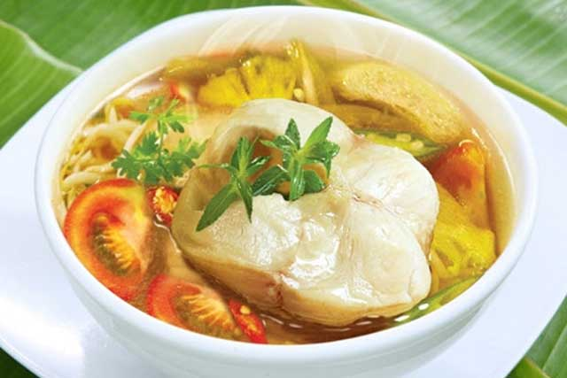

Ingredients:
- 1 slice of salmon, thorougly cleaned (Cut into 1 inch squares)
- 1 tablespoon of fishsauce
- 5 cups of water
- 2 teaspoons of white sugar
- 2 tablespoons of tamarind powder
- 1 teaspoon of salt
- 4 medium sized tomatoes
- 2 cups of mung bean sprouts
- 1 tablespoon of vegetable oil
- 2 cloves of minced garlic
- 2 stems of green onions chopped
- 1 teaspoon of freshly ground black pepper
- Cilantro
- 1/4 pineapple
- Marinate the fish with fish sauce, pepper and onion for 15 minutes at room temperature.
- In a medium pot, put in oil, garlic, and 4 sliced tomatoes. Sautee them. Add 5 cups of water into the sauteed vegetables. When it boil, add in the marinated fish. Cook the soup for fifteen minutes on low heat. Use a mesh or small spoon to scoup out any scum that floats to the top.
- Add sugar, tamarind powder, and salt into the pot. Add the mung bean sprout and pineapple. Add salt for taste if needed.
- Turn off the stove and add cilantro and the green pepper.
|
 |